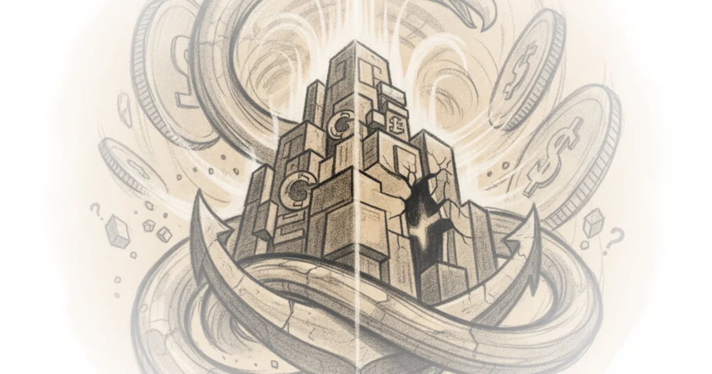

Adam Tooze identifies a crack in the foundation of the global financial system that most market participants are ignoring: the U.S. Treasury is no longer behaving like a safe asset. In a world where capital usually flows to the U.S. like water to a drain, the author argues that the "economic gravity" holding the dollar system together is weakening, not because of a sudden collapse, but because the fundamental mechanics of risk and reward have silently inverted. This is not a story about political noise, but a structural warning that the $32 trillion in public debt is being re-priced by the market as risky, while the Federal Reserve and the Treasury Department stubbornly cling to an outdated model of safety.
The Broken Sandwich
Tooze begins by dismantling the comforting narrative that U.S. stocks and bonds form a "complimentary sandwich." Historically, when the economy faced stress, investors would dump risky equities and flee into the safety of government bonds, driving yields down. This inverse correlation was the bedrock of portfolio management for decades. However, Tooze points out that this relationship has shattered. "Bond yields have risen sharply, with 30-year Treasury yields reaching a 19-year high above 5.30 per cent this month. Yet equity markets have kept marching higher." This divergence defies standard economic logic, where higher borrowing costs should crush stock valuations.

The author suggests this isn't merely a bubble in technology stocks, but a profound shift in how the world views American sovereign debt. Citing Stanford Finance Professor Hanno Lustig, Tooze argues that the "safe-asset model" has failed. "Pre-2020, the safe-asset model was a good fit: Treasurys traded at a premium to close substitutes, hedged equity risk, and rallied during stress episodes. Post-2020 each of these predictions has failed." The evidence is stark: U.S. Treasuries are no longer commanding a premium over German bonds or high-grade corporate debt; in fact, they often trade at a discount. This is a critical deviation. If the world's safest asset does not offer a safety premium, the entire architecture of global finance is operating on a false premise.
US Treasurys are no longer expensive compared to close substitutes like German sovereign bonds or AAA US corporate bonds, especially at longer maturities.
Critics might argue that this correlation flip is simply a result of unusual "supply shocks"—like pandemic disruptions or energy crises—that affect both stocks and bonds simultaneously. Tooze, however, leans heavily on Lustig's technical analysis to refute this. The data shows the breakdown is specific to long-term bonds, while short-term bills remain safe. A general macro shock would not create such a precise split in the yield curve. This specificity points to a deeper issue: the market is pricing in "duration-specific fiscal risk." The longer the government borrows, the more the market doubts the government's ability to manage its debt without devaluing it.
The Policy Blind Spot
The most alarming part of Tooze's commentary is the disconnect between market reality and official policy. While investors are selling off long-term bonds because they view them as risky, the Federal Reserve and the Treasury continue to treat them as unambiguously safe. "Bond investors and monetary policymakers now disagree on how to price US government debt," Tooze writes. "Bond investors increasingly question the safety of US Treasurys, and they have re-priced Treasurys as a risky claim. Central bankers and financial regulators have not adjusted."
This disagreement creates a dangerous feedback loop. When yields spike due to fiscal concerns, policymakers dismiss it as a "plumbing issue"—a temporary glitch in market liquidity—rather than a fundamental loss of confidence. "The Fed and now the Treasury too have on many occasions refused to accept the verdict of the market and have insisted that sharp movements in yields are ultimately explained not by fundamental but by technical issues of market plumbing, liquidity etc." By intervening to fix these supposed plumbing issues, the authorities risk suppressing the very price signals that warn of unsustainable debt. As Tooze notes, "The more the Fed absorbs fiscal news as 'plumbing,' the further along this path the US moves."
This dynamic mirrors historical precedents of financial repression. Tooze draws a sobering parallel to the period from 1942 to 1951, when the Federal Reserve capped bond yields to help finance the war, effectively forcing savers to accept negative real returns. "From 1942 through 1951, the Federal Reserve capped longbond yields at 2.5 percent to help finance the war effort. When inflation reached 14 percent in 1947, American savers, retirees, life-insurance policyholders, and pension funds incurred significant real losses until the 1951 Treasury–Federal Reserve Accord ended the peg." The risk today is that the U.S. is drifting toward a similar outcome, where the central bank absorbs fiscal excesses, not to stabilize the economy, but to mask the cost of debt, leading to a slow erosion of wealth for those holding the currency.
The Spiral of Fiscal Dominance
The consequences of this divergence are not abstract. Tooze warns of a "spiral of increasing financial repression." As investors lose faith in long-term debt, the Treasury is forced to issue more short-term bills to avoid the high yields of the long end. "The erosion of the Treasury premium at the long end of the yield curve has pushed the Treasury toward shorter maturities, raising rollover risk." This creates a fragile system where a failed auction or a spike in rollover costs could trigger emergency measures precisely when confidence is lowest. The primary dealers, who are balance-sheet constrained, cannot absorb the shock, leaving hedge funds and the Federal Reserve as the only buyers of last resort.
The author suggests that the only way out is a return to price discovery, which requires acknowledging the fundamental problem: persistent fiscal deficits. "Ultimately, many analysts and portfolio managers agree that tweaks to buybacks, issuance and market plumbing can't fix a longstanding problem that has recently gotten much more acute — persistent fiscal deficits." The choice, Tooze implies, is between financial repression, where the central bank absorbs the pain, or austerity, which involves "either higher taxes or lower spending." Given the current political climate, neither seems palatable, leaving the system in a precarious grey zone.
Fiscal and bond-market plumbing problems are intertwined.
The piece concludes by highlighting the dilemma facing policymakers like Kevin Warsh, who must decide whether to intervene in a market that is screaming about risk or to let the market speak. If the Fed continues to intervene under the guise of fixing plumbing, it may inadvertently validate the market's fear that the debt is unsafe, accelerating the spiral. The question is no longer whether the U.S. can pay its debts, but whether the global system can withstand the repricing of its most fundamental asset.
Bottom Line
Tooze's most compelling contribution is the framing of the Treasury market not as a victim of temporary liquidity issues, but as the first major casualty of a structural shift in fiscal dominance. The argument's greatest strength is its reliance on technical data to prove that the "safe asset" status of U.S. debt has eroded specifically at the long end, a nuance that dismisses simple macro-shock explanations. However, the piece's vulnerability lies in its assumption that policymakers will be forced to confront this reality; history suggests they may choose repression and obfuscation for much longer than the market expects. The reader should watch for the next Treasury auction of long-term bonds: if yields spike again without a corresponding drop in equity prices, the "safe asset" thesis will be dead, and the spiral will begin in earnest.